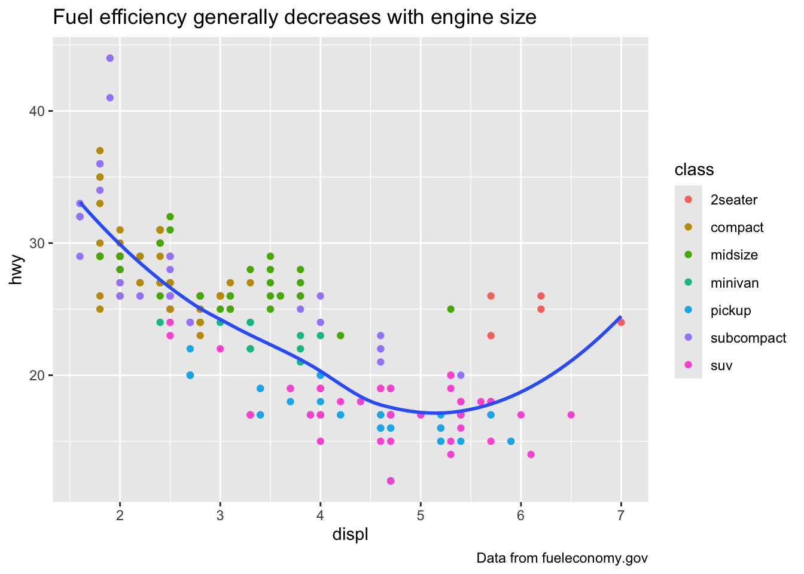
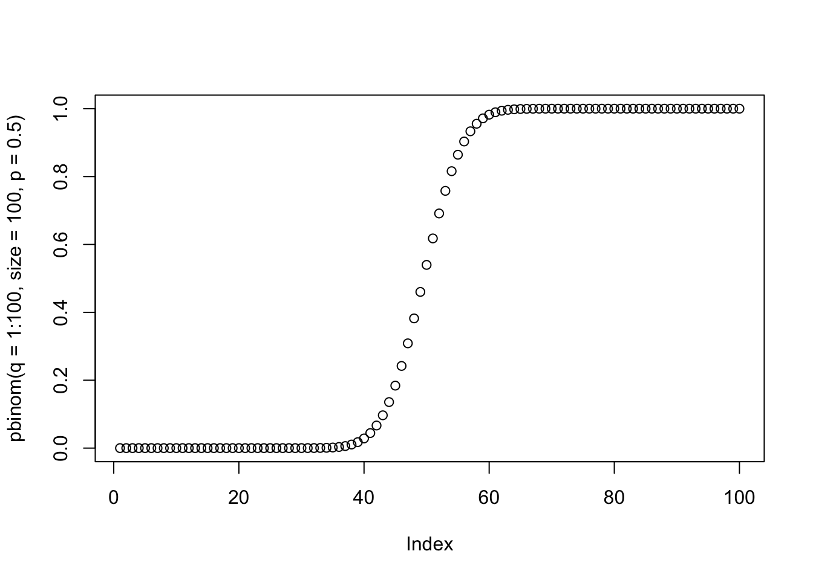
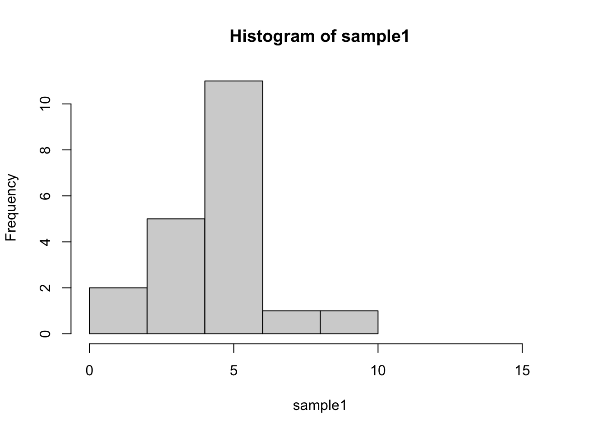
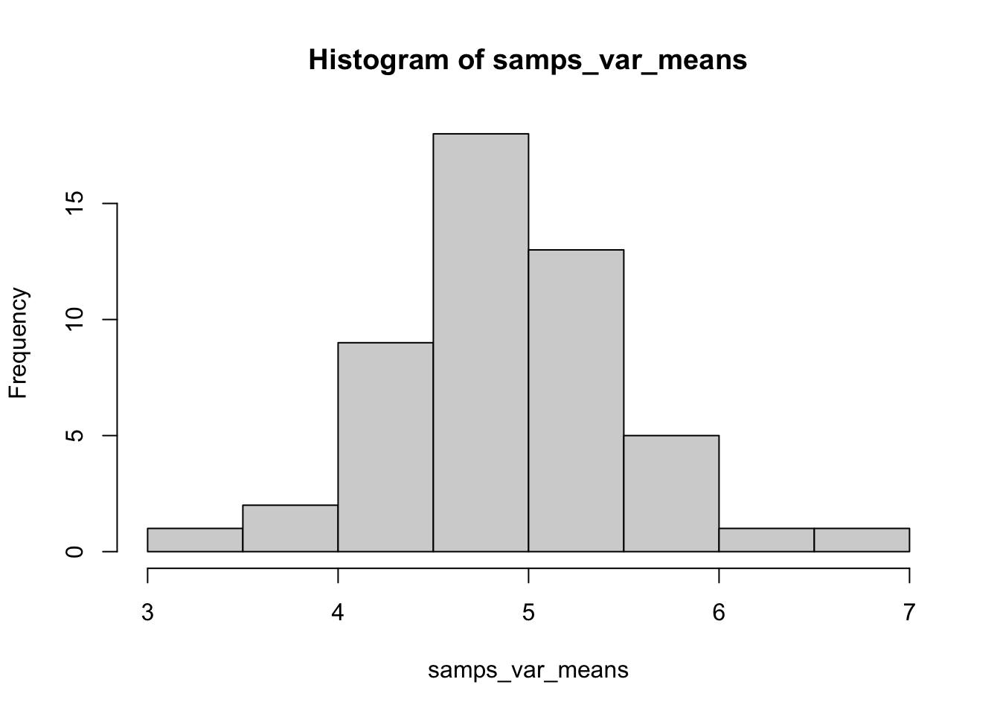
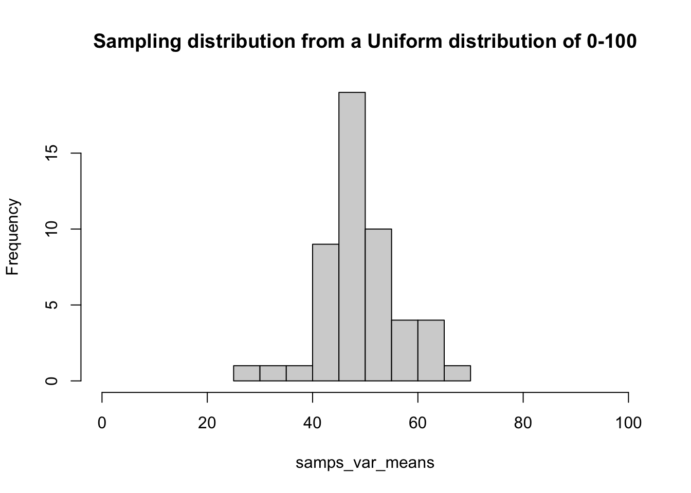

>"You know the greatest danger facing us is ourselves, an irrational fear of the unknown. But there’s no such thing as the unknown — only things temporarily hidden, temporarily not understood.">>--- Captain James T. Kirk
“You know the greatest danger facing us is ourselves, an irrational fear of the unknown. But there’s no such thing as the unknown — only things temporarily hidden, temporarily not understood.”
— Captain James T. Kirk
Formatting lists
- list_element- sub_list_element #double tab to indent- sub_list_element #double tab to indent- sub_list_element #double tab to indent- list_element- sub_list_element #double tab to indent#note the space after each dash- this is important!
`geom_smooth()` using method = 'loess' and formula = 'y ~ x'
Adding labels
ggplot(data=mpg, aes(displ, hwy)) +geom_point(aes(color=class)) +geom_smooth(se=FALSE) +labs(title ="Fuel efficiency generally decreases with engine size",caption ="Data from fueleconomy.gov" )
`geom_smooth()` using method = 'loess' and formula = 'y ~ x'

What type of plot do I use for each data type?
Randomness in Statistics
We often want to know truths about the world, but the best we can do is estimate them - and uncertainty in those estimates is a given.
The process of statistics is largely about quantifying and managing uncertainty.
Frequently, we want to understand how likely a particular observation or set of observations is (e.g. from a sample of a population), given some expectation.
Expectations can be based on theoretical probability distributions
Probability and distributions
Different flavors of inferential statistics
Frequentist Statistics
Classical or standard approaches
Null hypothesis testing
Hierarchical Probabilistic Modeling
Maximum Likelihood
Bayesian Analyses
Machine Learning
What is probability
Frequency interpretation
“Probabilities are understood as mathematically convenient approximations to long run relative frequencies.”
Subjective (Bayesian) interpretation
“A probability statement expresses the opinion of some individual regarding how certain an event is to occur.”
Random variables & probability
Probability is the expression of belief in some future outcome
A random variable can take on different values with different probabilities
The sample space of a random variable is the universe of all possible values
Random variables & probability
The sample space can be represented by a
probability distribution (discrete)
probability density function (PDF) (continuous)
algebra and calculus are used for each respectively
probabilities of a sample space always sum to 1.0
How does it make sense that a sample space will always sum to 1?
Bernoulli distribution
Describes the expected outcome of a single event with probability p
The expectation or mean of a random variable X is:
\[E[X] = \sum_{\text{all x}}^{}xP(X=x) = \mu\]
Often we want to know how dispersed the random variable is around its mean.
One measure of dispersion is the variance
\[Var(X) = E[X^2] = \sigma^2\]
Joint probability
\[Pr(X,Y) = Pr(X) * Pr(Y)\]
Note that this is true for two independent events
However, for two non-independent events we also have to take into account their covariance
To do this we need conditional probabilities
Conditional probability
For two independent variables: Probability of Y, given X, or the probability of X, given Y.
\[Pr(Y|X) = Pr(Y)\text{ and }Pr(X|Y) = Pr(X)\]
For two non-independent variables
\[Pr(Y|X) \neq Pr(Y)\text{ and }Pr(X|Y) \neq Pr(X)\]
Variables that are non-independent have a shared variance, which is also known as the covariance
Covariance standardized to a mean of zero and a unit standard deviation is correlation
What is Likelihood vs. Probability?
The probability of an event is the proportion of times that the event would occur if we repeated a random trial over and over again under the same conditions.
The likelihood is a conditional probability of a parameter value given a set of data
The likelihood of a population parameter equaling a specific value, given the data
L[parameter|data] = Pr[data|parameter]
Likelihood function which can have a maximum
Extra Bayesian material
Who wants to win a car?
Pretend that there are three doors, and behind one is a car. Behind the other doors are cats.
You choose one of the doors, and then Monte Hall opens one of the two remaining doors to reveal a cat.
At this point you have the choice of changing doors or staying with your original choice.
What should you do?
Common probability distributions
Geometric Distribution
If a single event has two possible outcomes the probability of having to observe k trials before the first “one” appears is given by the geometric distribution
The probability that the first “one” would appear on the first trial is p, but the probability that the first “one” appears on the second trial is (1-p)*p
By generalizing this procedure, the probability that there will be k-1 failures before the first success is:
\[P(X=k)=(1-p)^{k-1}p\]
mean = \(\frac{1}{p}\)
variance = \(\frac{(1-p)}{p^2}\)
Geometric Distribution
Example: If the probability of extinction of an endangered population is estimated to be 0.1 every year, what is the expected time until extinction?
Geometric Distribution
The distribution gives the probability of extinction in a given year (requiring that the population did not go extinct in all of the years prior)
If we want to know the probability of the population going exticnt by year 4, we simply add up the probabilities for years 1-3 using “or” rules
Testing Geometric Distributions
dgeom gives the density (probability) of an event (p) after (x) failures
pbinom gives the cumulative probability of reaching at least (q) number of successes after (size) number of trials
plot(pbinom(q=1:100, size=100, p=0.5))

Negative Binomial Distribution
Extension of the geometric distribution describing the waiting time until r “successes” have happened.
Generalizes the geometric distribution
Probability of the \(r^{th}\) “success” appearing on the \(k^{th}\) trial
mean = \(\frac{r}{p}\)
variance = \(r(1-p)/p^2\)
Negative Binomial Distribution
Example: If a predator must capture 10 prey before it can grow large enough to reproduce
What would the mean age of onset of reproduction be if the probability of capturing a prey on any given day is 0.1?
Notice that the variance is quite high (~1000) and that the distribution looks quite skewed
Poisson Probability Distribution
Another common situation in biology is when each trial is discrete, but the number of observations of each outcome is observed/counted
Some examples are
counts of snails in several plots of land
observations of the firing of a neuron in a unit of time
count of genes in a genome binned to units of 500 AA
Just like before you have ‘successes’, but
now you count them for each replicate
the replicates now are units of area or time
the values can now range from 0 to a large number
Poisson Probability Distribution
For example, you can examine 1000 genes
count the number of base pairs in the coding region of each gene
what is the probability of observing a gene with ‘r’ bp?
Pr(Y=r) is the probability that the number of occurrences of an event y equals a count r in the total number of trials
Poisson Probability Distribution
Note that this is a single parameter function because \(\mu = \sigma^2\)
The two together are often just represented by \(\lambda\)
\[Pr(y=r) = \frac{e^{-\lambda}\lambda^r}{r!}\]
This means that for a variable that is truly Poisson distributed:
the mean and variance should be equal to one another
variables that are approximately Poisson distributed but have a larger variance than mean are often called ‘overdispersed’
quite common in RNA-seq and microbiome data
Poisson Probability Distribution | gene length by bins of 500 nucleotides
Poisson Probability Distribution | increasing parameter values of \(\lambda\)
Testing Poisson Distributions
Number of counts (x) given a mean and variance of lambda
dpois(x=2, lambda=1)
[1] 0.1839397
plot(dpois(x=1:10, lambda=3))
Uniform Distribution
Means that the probability is equal for all possible outcomes
Like drawing m&m out of a bag with equal proportions of colors
dunif(x=1,min=0, max=10)
[1] 0.1
Uniform Distribution
plot(dunif(1:10, 0, 10))
Exponential Distribution
For example, let equal the instantaneous death rate of an individual.
The lifespan of the individual would be described by an exponential distribution (assuming that does not change over time).
Exponential Distribution
plot(dexp(1:100, rate =0.1))
Gamma Distribution
The gamma distribution generalizes the exponential distribution.
It describes the waiting time until the \(r^{th}\) event for a process that occurs randomly over time at a rate \(\lambda\)
Gamma Distribution
Example: If, in a PCR reaction, DNA polymerase synthesizes new DNA strands at a rate of 1 per millisecond, how long until 1000 new DNA strands are produced?
Assume that DNA synthesis does not deplete the pool of primers or nucleotides in the chamber, so that each event is independent of other events in the PCR chamber.
The Gaussian or Normal Distribution
Log-normal PDF | Continuous version of Poisson (-ish)
Transformations to ‘normalize’ data
Transformations to ‘normalize’ data
Binomial to Normal | Categorical to continuous
The Normal (aka Gaussian) | Probability Density Function (PDF)
Normal PDF
Normal PDF | A function of two parameters
(\(\mu\) and \(\sigma\))
where \[\large \pi \approx 3.14159\]
\[\large \epsilon \approx 2.71828\]
To write that a variable (v) is distributed as a normal distribution with mean \(\mu\) and variance \(\sigma^2\), we write the following:
Distribution of \(F_2\) genotypes | really just binomial sampling
Why else is the Normal special?
The normal distribution is immensely useful because of the central limit theorem, which says that the mean of many random variables independently drawn from the same distribution is distributed approximately normally
One can think of numerous situations, such as
when multiple genes contribute to a phenotype
or that many factors contribute to a biological process
In addition, whenever there is variance introduced by stochastic factors the central limit theorem holds
Thus, normal distributions occur throughout genomics
It’s also the basis of the majority of classical statistics
z-scores of normal variables
Often we want to make variables more comparable to one another
For example, consider measuring the leg length of mice and of elephants
Which animal has longer legs in absolute terms?
Proportional to their body size?
A good way to answer these last questions is to use ‘z-scores’
z-scores of normal variables
z-scores are standardized to a mean of 0 and a standard deviation of 1
We can modify any normal distribution to have a mean of 0 and a standard deviation of 1
Another term for this is the standard normal distribution
One point of convenience is that there is often a direct correspondence between a tidyverse command and its base R equivalent.
These generally follow a tidyverse::snake_case vs base::period.case rule. E.g. Compare:
tidyverse
base
?readr::read_csv
?utils::read.csv
?dplyr::if_else
?base::ifelse
?tibble::tibble
?base::data.frame
Etcetera.
If you call up the above examples, you’ll see that the tidyverse alternative typically offers some enhancements or other useful options (and sometimes restrictions) over its base counterpart.
–
Remember: There are (almost) always multiple ways to achieve a single goal in R.
Tidyverse packages
Let’s load the tidyverse meta-package and check the output.
library(tidyverse)
–
We see that we have actually loaded a number of packages (which could also be loaded individually): ggplot2, tibble, dplyr, etc. - We can also see information about the package versions and some namespace conflicts.
Tidyverse packages (cont.)
The tidyverse actually comes with a lot more packages than those that are just loaded automatically.1
We’ll use several of these additional packages during the remainder of this course.
E.g. The lubridate package for working with dates and the rvest package for webscraping.
However, bear in mind that these packages will have to be loaded separately.
.footnote[ 1 It also includes a lot of dependencies upon installation. This is a matter of some controversy.]
Tidyverse packages (cont.)
I hope to cover most of the tidyverse packages over the length of this course.
Today, however, I’m only really going to focus on two packages: 1. dplyr 2. tidyr
These are the workhorse packages for cleaning and wrangling data. They are thus the ones that you will likely make the most use of (alongside ggplot2, which we already met back in Lecture 1). - Data cleaning and wrangling occupies an inordinate amount of time, no matter where you are in your research career.
An aside on pipes: %>%
The tidyverse loads its own pipe operator, denoted %>%.
## These next two lines of code do exactly the same thing.mpg %>%filter(manufacturer=="audi") %>%group_by(model) %>%summarise(hwy_mean =mean(hwy))summarise(group_by(filter(mpg, manufacturer=="audi"), model), hwy_mean =mean(hwy))
–
The first line reads from left to right, exactly how I thought of the operations in my head. - Take this object (mpg), do this (filter), then do this (group_by), etc.
The second line totally inverts this logical order (the final operation comes first!) - Who wants to read things inside out?
An aside on pipes: %>% (cont.)
The piped version of the code is even more readable if we write it over several lines. Here it is again and, this time, I’ll run it for good measure so you can see the output:
# A tibble: 3 × 2
model hwy_mean
<chr> <dbl>
1 a4 28.3
2 a4 quattro 25.8
3 a6 quattro 24
Remember: Using vertical space costs nothing and makes for much more readable/writeable code than cramming things horizontally.
dplyr
Key dplyr verbs
There are five key dplyr verbs that you need to learn.
filter: Filter (i.e. subset) rows based on their values.
arrange: Arrange (i.e. reorder) rows based on their values.
select: Select (i.e. subset) columns by their names:
mutate: Create new columns.
summarise: Collapse multiple rows into a single summary value.1
Other dplyr goodies
group_by and ungroup: For (un)grouping. - Particularly useful with the summarise and mutate commands, as we’ve already seen.
slice: Subset rows by position rather than filtering by values. - E.g. starwars %>% slice(c(1, 5))
pull: Extract a column from as a data frame as a vector or scalar. - E.g. starwars %>% filter(gender=="female") %>% pull(height)
count and distinct: Number and isolate unique observations. - E.g. starwars %>% count(species), or starwars %>% distinct(species) - You could also use a combination of mutate, group_by, and n(), e.g. starwars %>% group_by(species) %>% mutate(num = n()).
Data cleaning and manipulation
Here, we differentiate “data cleaning” from “data manipulation”, which is perhaps an arbitrary distinction.
“Data cleaning” typically refers to altering variable class information, fixing mistakes that could have arisen in the data (e.g., an extra ‘.’ symbol in a numeric value), and things of this nature.
“Data manipulation”, in my mind, refers to altering the structure of the data in a way that changes the functional structure the data (e.g., an addition of a column, deletion of rows, long/wide formatting change).
gapminder data
The gapminder data are commonly used to explore concepts of data exploration and manipulation, maybe because of the combination of character and numeric variables, nested structure in terms of country and year, or maybe it is just out of ease in copying notes from other people.
dat <-read.delim(file ="http://www.stat.ubc.ca/~jenny/notOcto/STAT545A/examples/gapminder/data/gapminderDataFiveYear.txt")
head(dat)
country year pop continent lifeExp gdpPercap
1 Afghanistan 1952 8425333 Asia 28.801 779.4453
2 Afghanistan 1957 9240934 Asia 30.332 820.8530
3 Afghanistan 1962 10267083 Asia 31.997 853.1007
4 Afghanistan 1967 11537966 Asia 34.020 836.1971
5 Afghanistan 1972 13079460 Asia 36.088 739.9811
6 Afghanistan 1977 14880372 Asia 38.438 786.1134
str(dat)
'data.frame': 1704 obs. of 6 variables:
$ country : chr "Afghanistan" "Afghanistan" "Afghanistan" "Afghanistan" ...
$ year : int 1952 1957 1962 1967 1972 1977 1982 1987 1992 1997 ...
$ pop : num 8425333 9240934 10267083 11537966 13079460 ...
$ continent: chr "Asia" "Asia" "Asia" "Asia" ...
$ lifeExp : num 28.8 30.3 32 34 36.1 ...
$ gdpPercap: num 779 821 853 836 740 ...
gapminder data
We can use what we learned before in terms of base R functions to calculate summary statistics.
# mean life expectancymean(dat$lifeExp)
[1] 59.47444
But what does mean life expectancy really tell us, when we also have information on space (country) and time (year)? So we may wish to subset the data to a specific country or time period. We can do this using which statements.
Recall that which evaluates a condition, and then determines the index of each TRUE value. So for the first example, the which tells us the indices where the vector dat$country is equal to “Afghanistan”. Putting this result vector of indices within the square brackets allows us to subset the data.frame based on these indices (specifically, we are subsetting specific rows of data).
In the second example, we want to see all data that was recorded prior to 1960. As you will quickly realize, there are always multiple ways to do the same thing when programming. For instance, this second statement could be done in base R using the subset function.
subset(dat, dat$year <1960)
The subset function also allows you to ‘select’ specific columns in the output.
country year pop continent lifeExp gdpPercap
1 Afghanistan 1952 8425333 Asia 28.801 779.4453
1573 Turkey 1952 22235677 Europe 43.585 1969.1010
gapminder data
only returns two rows, because it only matches the first instance of both countries in the data. We can use match to get the index associated with a single value (useful when writing functions).
While a bit opaque, these functions are pretty useful in a variety of situations. Speaking of data manipulation functions that are useful but a bit conceptually difficult, do.call and Reduce are solid base R functions.
do.call is a way of calling the same function recursively on multiple objects, and may have similar output to Reduce, which is also a way to recursively apply a function.
There are many R libraries designed to manipulate data and work with specific data structures (e.g., purrr for list objects, lubridate for dates, etc.).
For the sake of brevity and generality, we will examine one main useful packages for data manipulation: dplyr.
The nice part about dplyr::rename() is that we specify the old and new column names, meaning that there is little risk of an indexing error as with using the colnames() or names() functions.
select
Many of the next functions are directly analogs of functions from another programming language used to query databases (SQL). This makes it really nice to learn, as you can essentially learn two languages while learning one. SQL is pretty powerful when working with relational data. I will not go into what I mean by this, unless there is time during lecture and interest among you all.
We use dplyr::select when we want to…select…columns.
dplyr::filter is another one of those useful functions that we already know how to use in base R. Previously, we have used which statements or the subset function. dplyr::filter is used to filter down a data.frame by some condition applied to rows.
dplyr::filter(df2, a <0.5)
mutate
dplyr::mutate is used when we wish to create a new covariate based on our existing covariates. For instance, if we wanted to create a column e on df2 that was the sum of a+b divided by d…
df2 <- dplyr::mutate(df2, e=(a+b)/d)head(df2,5)
a b d e
1 0.3243548 0.79117276 1.5810743 0.70555041
2 0.2800363 0.28220355 -0.4963027 -1.13285681
3 0.9318768 0.75790762 0.9595241 1.76106510
4 0.7583689 0.04228768 1.2519443 0.63953053
5 0.1081216 0.07187200 2.8208981 0.06380719
Notice that the function creates a new column and appends it to the existing data.frame, but does not “write in place”. That is, the df2 object is not modified unless it is stored (which we do above).
group_by
dplyr::group_by is really useful as an intermediate step to getting at summary statistics which take into account grouping by a character or factor variable. For instance, if we wanted to calculate the mean life expectancy (lifeExp) for every country in the gapminder data (dat), we would first have to group by country.
datG <- dplyr::group_by(dat, country)
This is a bit like a non-function, since dat and datG are essentially the same….but they are not for the purposes of computing group-wise statistics. This is done using the dplyr::summarise function.
summarise
So if we wanted to calculate mean life expectancy (lifeExp) per country, we could use the grouped data.frame datG and the dplyr::summarise function to do so.
dplyr::summarise(datG, mnLife=mean(lifeExp))
# A tibble: 142 × 2
country mnLife
<chr> <dbl>
1 Afghanistan 37.5
2 Albania 68.4
3 Algeria 59.0
4 Angola 37.9
5 Argentina 69.1
6 Australia 74.7
7 Austria 73.1
8 Bahrain 65.6
9 Bangladesh 49.8
10 Belgium 73.6
# ℹ 132 more rows
joins
joins are something taken directly from SQL. Table joins are ways of combining relational data by some index variable. That is, we often have situations where our data are inherently multi-dimensional. If we have a data.frame containing rows corresponding to observations of a species at a given location, we could have another data.frame containing species-level morphometric or trait data. While we could mash this into a single data.frame, it would repeat many values, which is not ideal for data clarity or memory management.
Now we can join some stuff together, combining data on mean species-level characteristics with individual-level observations.
# maintains the structure of df (the "left" data structure)left_join(df, info, by='species')# maintains the structure of info (the "right" data structure)right_join(df,info, by='species')# return things that are in info but not in dfanti_join(info, df, by='species')
There are other forms of joins (full_join, inner_join, etc.), but I find that I mostly use the left or right variations of the joins, as it specifically allows me to control the output (i.e., using dplyr::left_join, I know that the resulting data.frame will have the same number of rows as the left hand data.frame).
piping
Alright. So before we discussed joins, we were describing the different main verbs of dplyr. We discussed rename, select, mutate, group_by, and summarise. A final point, and something tidyverse folks really love, is the use of these functions in nested statements through the use of piping.
Pipes in bash scripting look like |, pipes in R syntax look like %>%. It does not matter what it looks like though, it matter what it does. Here is a simple example of the use of piping. We can go back to the example of calculating the mean life expectancy per country from the gapminder data.
tmp3 <- dat %>% dplyr::group_by(country) %>% dplyr::summarise(mnLifeExp=mean(lifeExp))
The results of these two are identical (all(tmp3==tmp2) returns TRUE).
This is useful, as commands can be chained together, including the creation of new variables, subsetting and summarising of existing variables, etc. One thing to keep in mind is to check intermediate results – instead of just piping all the way through – as data manipulation errors can be introduced mid-statement and go unnoticed. That is, in some situations, piping does not help reproducibility. Many proponents argue that it helps with code readability, while many others say that actively makes code less human readable. It definitely does require adopting a certain syntax and the assumption that every end user is on the tidyverse train, which is not ideal when reproducibility involves everyone, not just the cool tidy/Hadley/RStudio crowd.
Next time
Exploratory data analysis - what do you do immediately after collecting your data?
Week 7A - Exploratory Data Analysis
Midterm Feedback
Thank you all for providing thoughtful feedback on the last Problem Set!
You all really enjoy in-class exercises - we’ll do more of that!
The homework difficulty doesn’t always align well with the lectures - will try to remedy this
Where do we begin?
A major goal of statistics is to estimate parameters of a population so that we can compare them to values that are of practical importance to our understanding of the system, or to compare parameter estimates between and among different populations
This is the first important step before getting to hypothesis testing!
Understanding Populations and their Parameters
We often think about the samples we are collecting as a part of a larger population
Since we can’t measure every member of that population, we instead use sampling to estimate the parameters of the population as a whole
Some common parameters: mean, range, median
If we performed random sampling, we assume that the parameter estimates of our sample are equitable to the true population parameters
Simulations to compare parameter estimates
Let’s use our distribution functions from last time to set up some data to play with
Let’s imagine our data is made up of counts, with an average of 5 counts - which distribution would fit that data best?
Ex: number of hours spent doing homework by UO undergraduates
Simulations to compare parameter estimates
Let’s use our distribution functions from last time to set up some data to play with
Let’s imagine our data is made up of counts, with an average of 5 counts - which distribution would fit that data best?
Ex: number of hours spent doing homework by UO undergraduates
How would we calculate the mean and range for this population?
Calculating parameters
How would we calculate the mean and range for this population?
mean(true_pop)
[1] 4.927
range(true_pop)
[1] 0 13
median(true_pop)
[1] 5
Sampling
Those values represent our true population parameters, which we often cannot know.
Sampling is the method used in academia and science to try and estimate the true population values.
We have also discussed how sample size can greatly affect the accuracy of our estimates
Sampling Exercise
Since we are working with simulated data, we can also afford to simulate our sampling!
Try taking a sample from our true_pop dataset and change the sample size, then calculate the mean and range for your sample and see how it compares to the true values.
How many college students are you including in your survey?
Sampling Exercise

[1] "Mean: " "4.95"
[1] "Range: " "1" "10"
Randomness in Sampling
Because of the randomness of sampling, you may get close to the true estimates even with a small sample size - but your results will change each time you take a new sample of the same size
How do we get a feel for how accurate each sample size is? Or which sample size is recommended?
Surveying your Sampling
samps_var <-replicate(50, sample(true_pop, 10)) #Take 50 samples of size 10samps_var_means <-apply(samps_var, 2, mean) #Calculate the mean from each samplehist(samps_var_means) #Plot the distribution of sample means

Surveying your Sampling
We get close to the true mean (4.9) about 2/3rds of the time - is this good enough?
table(samps_var_means >4.5& samps_var_means <5.5)
FALSE TRUE
19 31
Surveying your Sampling
This sampling variation is what we have to deal with, and account for, as empirical scientists.
If this had been a real-world scenario, we likely would be basing our estimate for the true mean on just a single sample mean.
Getting close to the idea of power - does our experimental design have the power to detect the parameters we are interested in?
Sampling Distributions
The previous exercise illustrates the concept of a sampling distribution.
We sampled over and over again (50 times) and calculated the mean for each sample to demonstrate the sampling distribution for the mean, our original parameter of interest.
One important point is that the sampling distribution for a given parameter is often very different from the variable’s distribution in the population. In many cases, the sampling distribution is normal or approximately so.
Normal Sampling Distributions
Normal Sampling Distributions

Sampling Distributions - It’s been Normal this whole time?!
Sampling Distributions - Exercise
Try creating some data using one of the other distributions we discussed last time (Exponential Distribution) and then create a sampling distribution. Is it normal?
For most real world data sets we can’t empirically determine a sampling distribution by taking many actual samples, because we often have just the one sample.
Fortunately, we can rely on the Central Limit Theorem to make some assumptions about sampling distributions, particularly when estimating a mean from a single sample, or when estimating most any parameter using a “pseudo” or re-sampling process we refer to as “bootstrapping”
Standard Error - the Range of the Sampling Distribution
The sampling distribution models all values we might have obtained from our sample and their probabilities of occurrence.
The standard error of an estimate can be conceptualized as the standard deviation of a sampling distribution.
So, whenever we obtain a parameter estimate, we need to include the standard error in some form or another, which is a measure of the precision of our estimate.
Standard Error
The sample size and the spread of the distribution (range) - contribute to what is known as the standard error of a random variable.
The standard error for any given sample attribute (such as a sample mean), can be calculated either based on distributional assumptions, or by a process called “resampling.”
Standard error
Calculating the Standard Error
Standard Error of the Mean (SEM)
SEM = SD / sqrt(sample size)
Calculating the Standard Error
Think conceptually - how will SEM change as sample size increases?
-Unfortunately, most other kinds of estimates (anything not the mean) do not have this amazing property, but we can rely on another approach to calculate the standard error. - This involves generating your own sampling distribution for the estimate using the “bootstrap,” a method invented by Efron (1979). - We call the bootstrap, and other methods that do not rely on distributional assumptions of the variable itself, “nonparametric” approaches.
Easy steps for bootstrapping in R
Take a random sample (with replacement) from your sample data
Calculate the estimate using the measurements in the bootstrap sample (step 1). This is the first bootstrap replicate estimate
Repeat steps 1 and 2 a large number of times (1000 times is reasonable)
Calculate the sample standard deviation of all the bootstrap replicate estimates obtained in step 3 (SSD = sd(sample)/sqrt(sample size))
Bootstrapping
The resulting quantity is called the “bootstrap standard error”
The bootstrap can be applied to almost any sample statistic, including means, proportions, correlations, and regression parameters.
It works when there is no ready formula for a standard error, for example when estimating the median, trimmed mean, correlation, eigenvalue, etc.
It is nonparametric, so doesn’t require normally-distributed data, as mentioned. - - It works well for parameter estimates that are based on complicated sampling procedures or calculations. For example, it is used to assess confidence in local relationships within phylogenetic trees.
Confidence Intervals
A confidence interval is a range of values about a parameter estimate, such that we are X% certain that the true population parameter value lies within that interval.
For now, know that for a normally distributed sample, a confidence interval about the population mean can be calculated using the t.test() function in base R.
The 95% confidence interval is commonly reported in statistical analysis results, by convention, but other values are occasionally reported as well.
Relationship between Mean and Variance
Population means and variances (and hence standard deviations) tend to have a strong, positive relationship.
So an otherwise similarly shaped distribution, but with a much larger mean, will by default have a much larger standard deviation
Relationship between mean and variance
This means it is inappropriate to compare variations of different populations with largely different means
For instance, comparing the standard deviation for a body measurement in a population of mice, with the same body measurement in a population of elephants is not meaningful.
Test it out
Try changing the lambda of the original population, and see how the SD changes
To make standard deviations comparable across populations with very different means, we can instead compare a standardized metric called the “coefficient of variation” (CV), which is simply the sample standard deviation divided by the sample mean (and usually expressed as a % by multiplying by 100).
Week 6A: Ethics in Data Science
Today we’ll be talking about
A roadmap for the rest of the term
The unethical history of statistics and data science
Last week’s homework
What Stats are we learning?
Probability, distributions, and sampling
Exploratory data analysis
Test statistics, p-values, type 1 and 2 errors
Types of data, t-tests
Linear models, ordinary least squares, ANOVA
Experimental design
Thinking about your final project
As we’re going through these statistical techniques, think about which one(s) might be most appropriate for your data analysis.
The project ideally will take in some sort of raw data, analyze it (summary statistics, significance tests), and plot your findings.
Can incorporate Unix and/or R, can be presented via a script and/or RMarkdown document.
The History of Statistics
Galton as the Father of Eugenics
Francis Galton: Darwin’s half cousin
Studied human variation and genetic inheritance
Human height, fingerprints, intelligence
Correlation, regression toward the mean, and “nature versus nurture”
Pioneered twin studies
Galton
Galton as the Father of Eugenics
Believed that intelligence was hereditary based on surveying prominent academics in Europe
Used the ideas of correlation and regression towards the mean to argue that the upper class should breed amongst themselves to keep those “good genes” pure
Wanted to provide monetary incentives for “good” couples to marry and reproduce as a way to avoid the upper class being genetically muddied by the lower class
A common sight at state fairs around the U.S. in the 1930s
Competitions for the “perfect family” to encourage public consciousness and support for eugenics
Galton with Charles Davenport and G. Stanley Hall
American Eugenics Record Office (ERO) founded in Cold Springs Harbor
Logo of the US eugenics society
Eugenics societies in America
Advocated for state laws to ban interracial marriages and promote sterilization of “unfit” individuals (negative eugenics) - especially black, Latinx, and Native American women
30 states passed laws to force mental institution patients to be sterilized
Between 1907 and 1963, over 64,000 individuals were forcibly sterilized under eugenic legislation in the United States
RA Fisher and Eugenics in London
Developer of Fishers exact test, analysis of variance (ANOVA), null hypothesis, p values, maximum likelihood, probability density functions
Founding Chairman of the University of Cambridge Eugenics Society
RA Fisher and Eugenics
1/3rd of his work “The Genetical Theory of Natural Selection” discussed eugenics and his theory that the fall of civilizations was due to the fertility of their upper classes being diminished
Used these statistical methods to test data on human variation to prove biological differences between human races
Eugenics and racism were the primary motivators for many of these statistical tests that we use today
Eugenics has a direct line to Hitler and Nazism
Eugenics existed in America (and England) before it became popular in Germany.
By 1933, California had subjected more people to forceful sterilization than all other U.S. states combined.
The forced sterilization program engineered by the Nazis was partly inspired by California’s.
Sterilizations continue in America
Our history books paint Nazi Germany as the primary evil of that time, while we try to cover up our significant role in eugenics
It wasn’t until 1978 that the US passed regulations on sterilization procedures
California only passed a bill to outlaw sterilization of inmates in 2014
Certain members of the genetic engineering community threaten to bring back eugenics ideas
So, what do we do from here?
The statistical methods that Galton, Fisher, and others developed are useful science tools
Important to use these tools for good - improving our planet, human health, and technology
Important to acknowledge and not forget the history of science - educate others to avoid repeating history